Abra o Tinkercad e crie um Projeto 3D

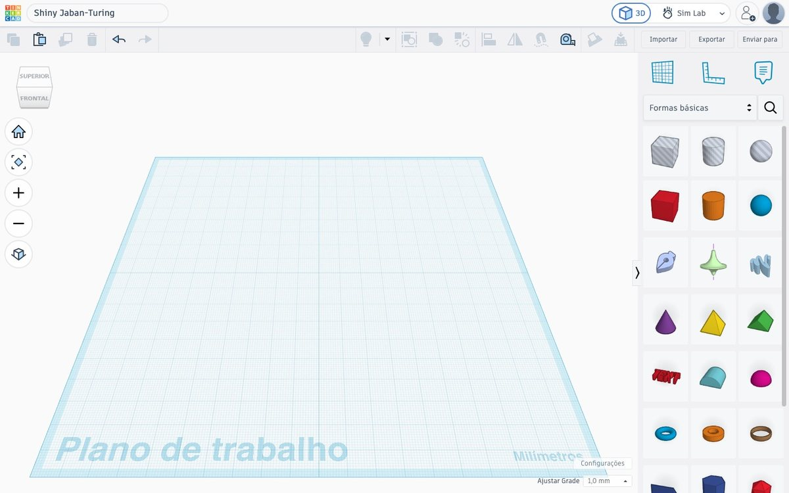
O clipe repete sozinho. Repare onde o cursor vai antes de clicar.
Foto da tela.
Entre no Tinkercad com a sua conta, como nas aulas anteriores. No canto de cima à direita, clique em + Criar e, na primeira linha, em Projeto 3D.
Abre o editor com o plano azul quadriculado vazio e um nome sorteado — deixe assim, no último passo você troca.
- Não sei entrar
- Chame o professor. Não crie conta nova: os seus projetos estão na antiga.
- Abriu outra coisa
- Volte com a seta ⟵ do navegador e clique de novo em + Criar, escolhendo a primeira linha.
- A tela ficou branca
- O Tinkercad é pesado. Espere até meio minuto. Se continuar branca, recarregue com F5.
Arraste uma Caixa para o plano
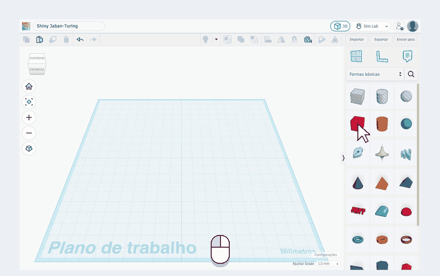
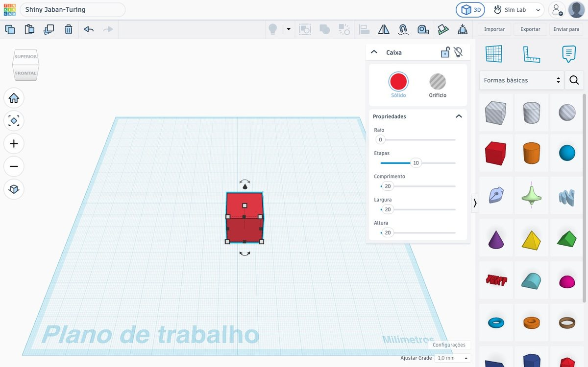
O clipe repete sozinho. Repare onde o cursor vai antes de clicar.
Foto da tela.
Na coluna da direita, a forma vermelha do meio da segunda fileira, à esquerda, é a Caixa. Segure o botão esquerdo nela, arraste até o meio do plano e solte.
É a parede da casa.
- Peguei a caixa cinza listrada
- Essa é o buraco. Aperte Delete e arraste a vermelha, a da segunda fileira.
- Não apareceu o painel
- Clique uma vez na caixa: o painel abre quando ela está selecionada.
Comprimento 50, Largura 60, Altura 40
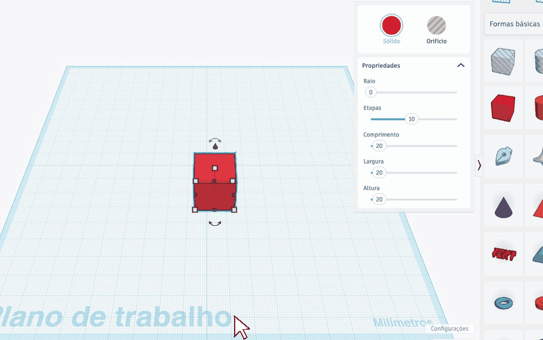
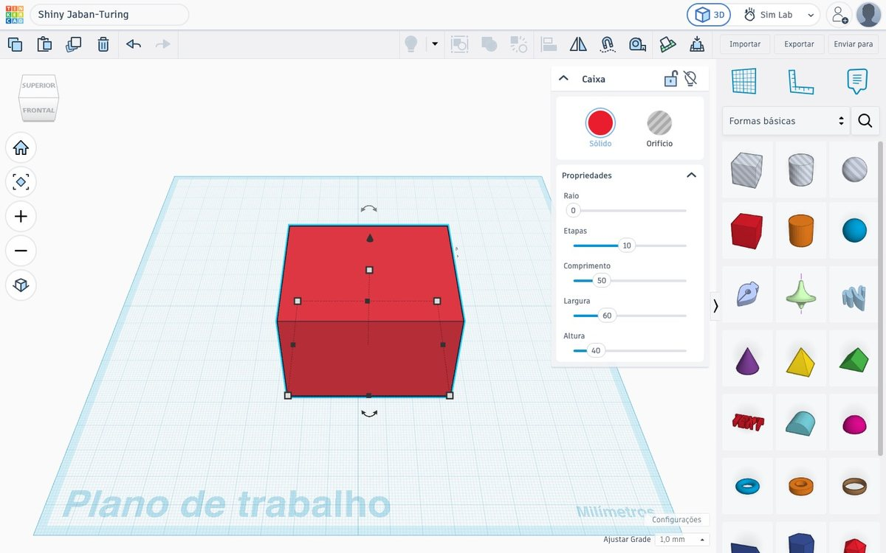
O clipe repete sozinho. Repare onde o cursor vai antes de clicar.
Foto da tela.
No painel, clique no campo Comprimento, apague, escreva 50 e aperte Enter. Faça o mesmo em Largura com 60 e em Altura com 40.
O número grande vai em Largura: é a direção que corre da esquerda para a direita na tela. A casa fica mais larga que funda.
- O bloco ficou fundo e estreito
- O 60 foi parar em Comprimento. Troque: 50 em Comprimento e 60 em Largura.
- Digitei e nada mudou
- Falta o Enter depois de cada número.
- O campo ficou com número estranho
- Clique no campo, aperte Ctrl + A (no Mac, Cmd + A) e escreva de novo.
Solte o Telhado em cima da casa
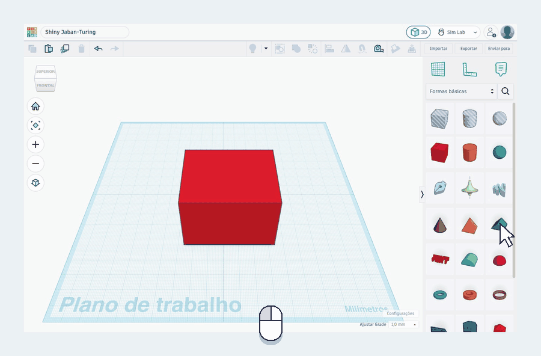
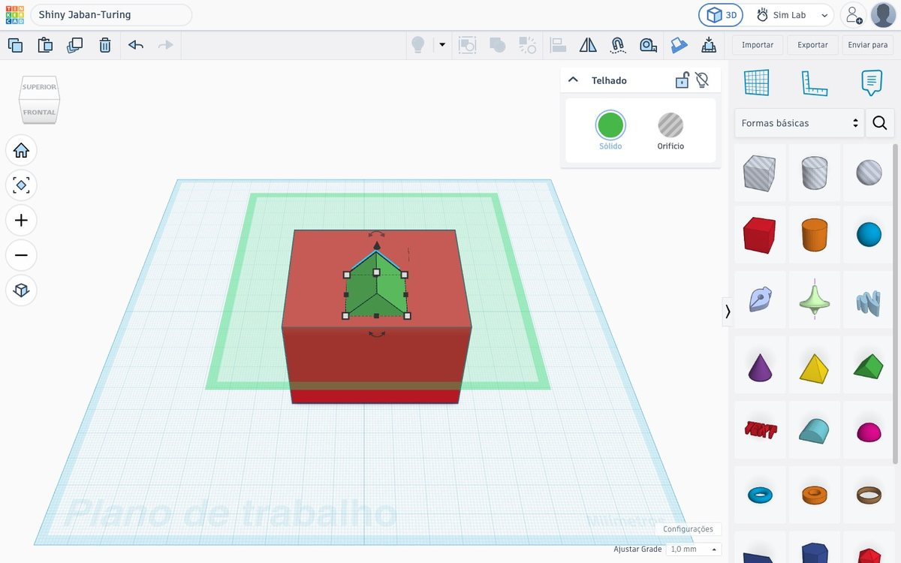
O clipe repete sozinho. Repare onde o cursor vai antes de clicar.
Foto da tela.
Na coluna da direita, na fileira do cone e da pirâmide, a forma verde com o nome Telhado é um prisma de duas águas. Segure o botão esquerdo nela e solte bem no meio da tampa da casa.
O telhado nasce em cima da casa, na altura da tampa — e aparece um quadrado verde: o plano de trabalho foi para o alto da caixa. Ele ainda é pequenininho e está fora do lugar.
- Não acho o Telhado
- Fica na fileira do cone (roxo) e da pirâmide (amarela): é o verde, o terceiro dessa fileira.
- O telhado caiu no chão, ao lado
- Você soltou fora da casa. Arraste-o de novo, soltando em cima da tampa.
- Peguei a pirâmide
- Serve para outra aula. Aperte Delete e pegue o verde.
Telhado 66 × 56 × 24, pelas alças
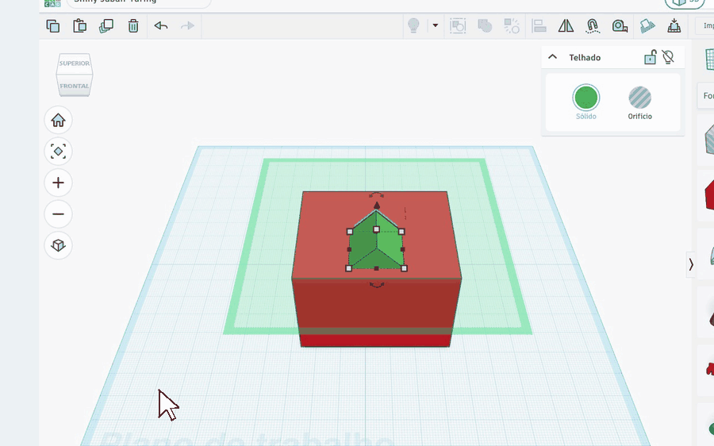
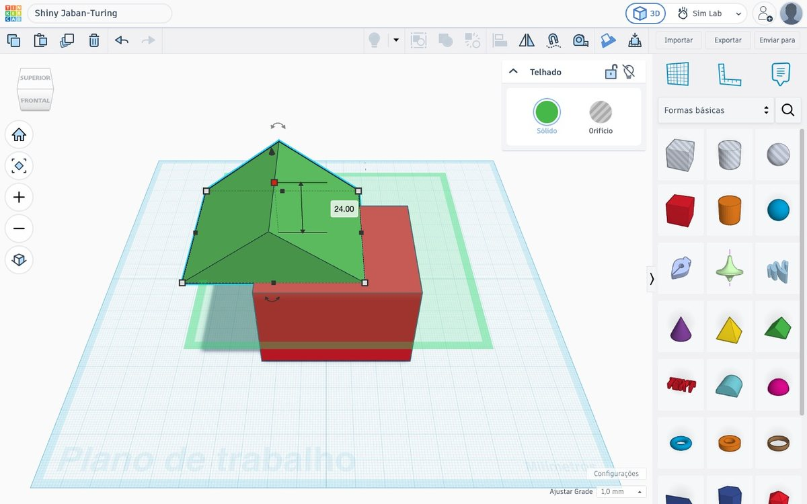
O clipe repete sozinho. Repare onde o cursor vai antes de clicar.
Foto da tela.
O telhado não tem campo de medida, como o cilindro da Aula 2: o tamanho vem das alças.
1. Clique na alça do canto de cima à esquerda da base do telhado. Clique no número da esquerda e escreva 56 (Enter); clique no número de cima e escreva 66 (Enter).
2. Clique na alça do meio da ponta (a de cima) e escreva 24 no número da altura.
O telhado cresce 3 mm para cada lado além da casa (66 − 60 = 6, e 6 ÷ 2 = 3): é o beiral. Ele vai ficar torto, para um lado: o Alinhar arruma já.
- Os números sumiram
- Clique no telhado e de novo na alça do canto: eles reaparecem.
- Apareceu um número só
- Você clicou na alça do meio: ela mede a altura. A do canto mostra dois números.
- O telhado afundou na casa
- Aperte Ctrl + Z e confira se o telhado ainda está em cima da tampa antes de mexer nas alças.
Selecione tudo: Ctrl + A
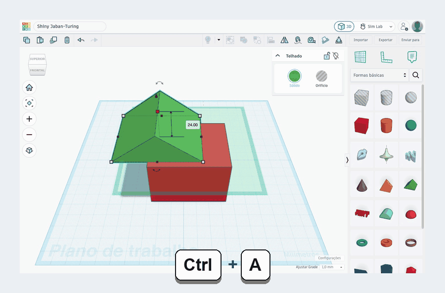
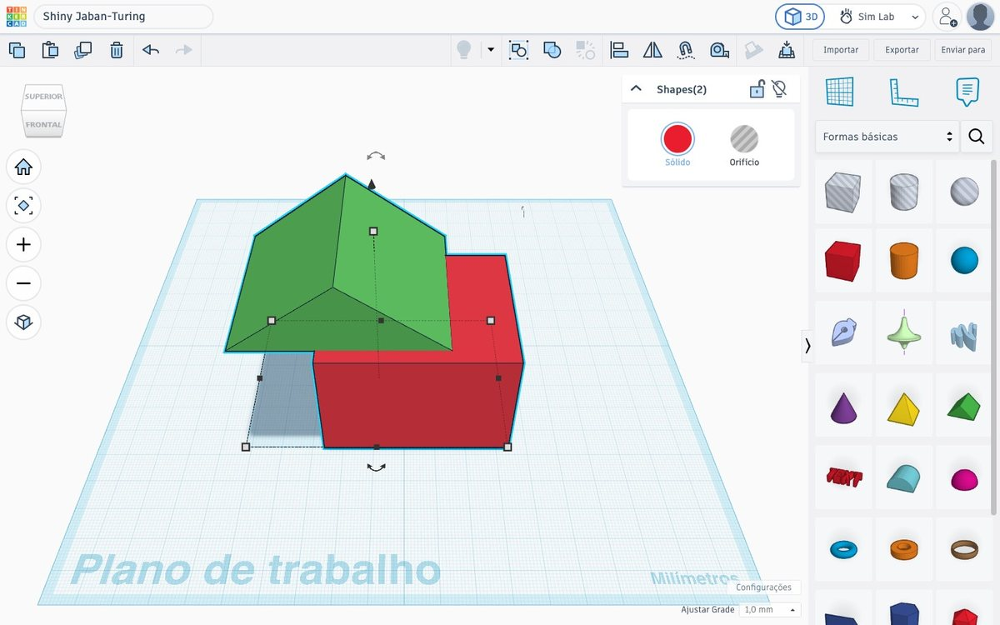
O clipe repete sozinho. Repare onde o cursor vai antes de clicar.
Foto da tela.
Clique num lugar vazio do plano e aperte Ctrl + A (no Mac, Cmd + A).
A casa e o telhado ficam selecionados juntos: o painel diz Shapes(2).
- Selecionou só um
- Clique num lugar vazio do plano e aperte Ctrl + A de novo.
Abra o Alinhar
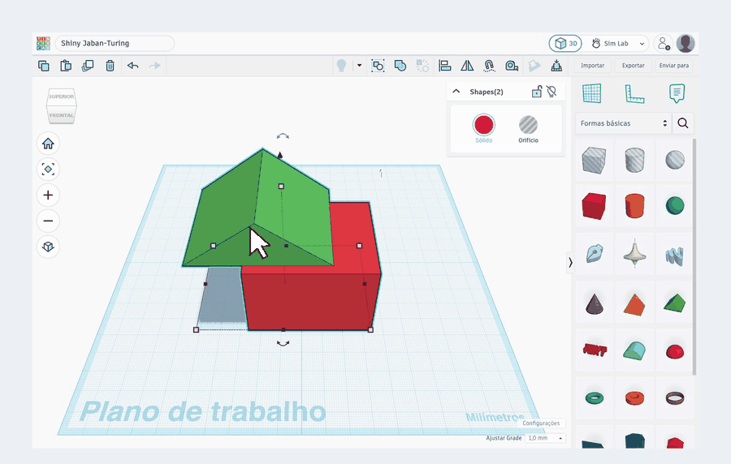
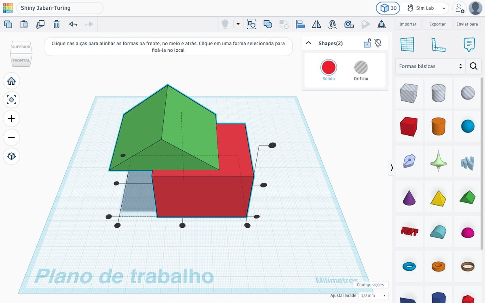
O clipe repete sozinho. Repare onde o cursor vai antes de clicar.
Foto da tela.
Na barra de cima, clique no botão Alinhar (o ícone com linhas de tamanhos diferentes, ao lado do espelho).
Aparecem as nove bolinhas pretas em volta das duas peças, como nas aulas 2 e 3.
- As bolinhas não apareceram
- O Alinhar só abre com duas ou mais peças selecionadas. Volte ao passo 6.
- Não acho o botão
- Fica na barra de cima, no meio, ao lado do espelho. Passe o mouse e espere o nome aparecer.
FIXE a casa: clique nela
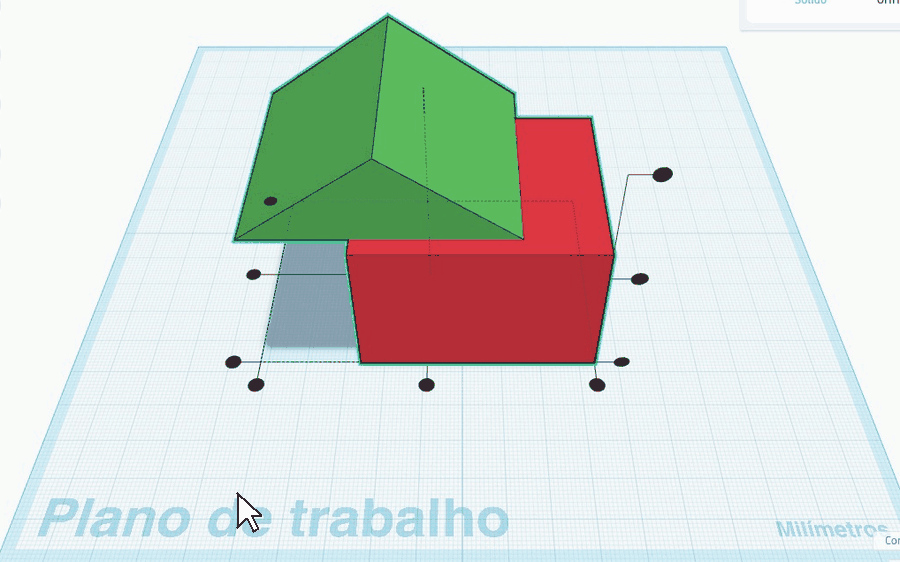
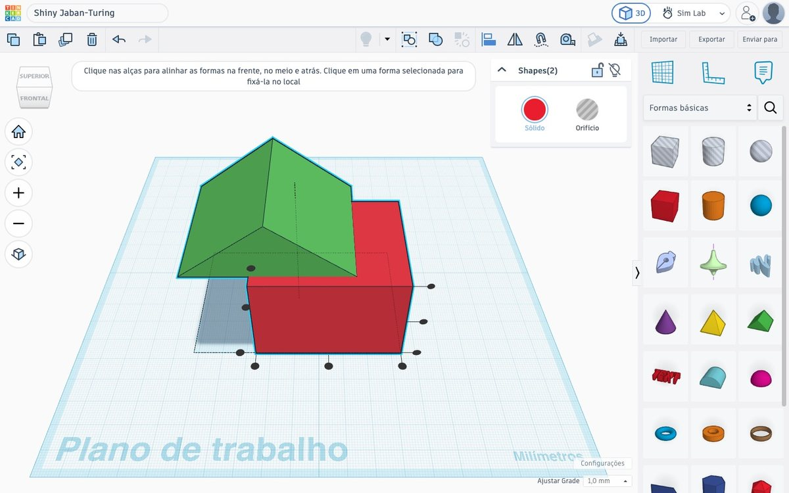
O clipe repete sozinho. Repare onde o cursor vai antes de clicar.
Foto da tela.
O Alinhar move todas as peças até uma linha comum. Se você alinhar assim, quem se mexe pode ser a casa, e não o telhado.
Clique no corpo vermelho da casa (uma forma selecionada): ela fica fixa, e só o telhado vai andar.
- A seleção sumiu
- Você clicou fora da casa. Aperte Ctrl + Z, abra o Alinhar de novo e clique em cima do vermelho da casa.
- Não sei se fixou
- Siga os próximos passos: se a casa andar, volte ao passo 7 e fixe antes de clicar nas bolinhas.
Centro em X: a bolinha do meio, embaixo
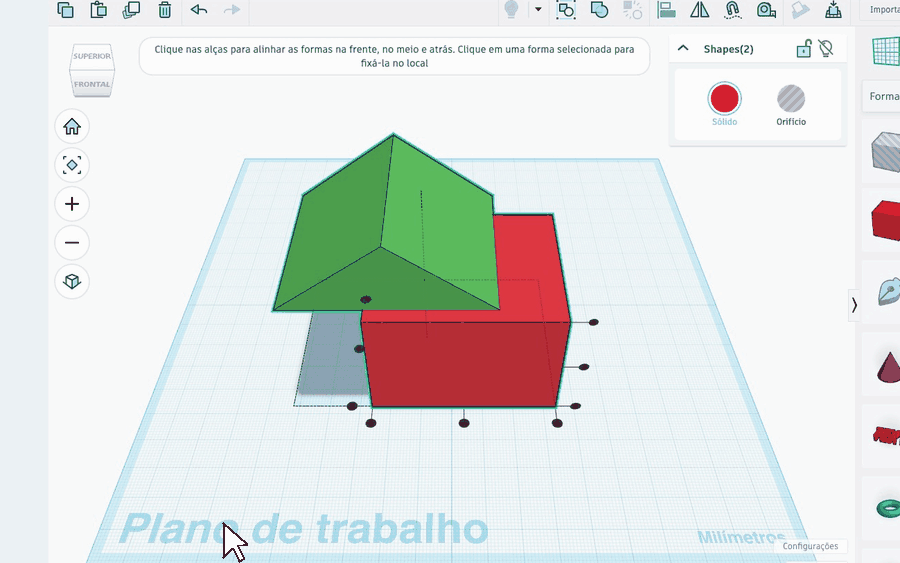
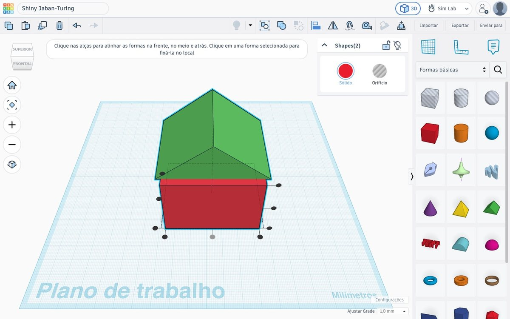
O clipe repete sozinho. Repare onde o cursor vai antes de clicar.
Foto da tela.
Clique na bolinha do meio da fileira de baixo.
O telhado desliza e se centra na casa, da esquerda para a direita: o beiral fica igual dos dois lados.
- As bolinhas mudaram de lugar
- É normal: depois de cada clique elas se reposicionam. Procure de novo a do meio de baixo.
- A casa é que andou
- Você não fixou a casa. Aperte Ctrl + Z e volte ao passo 8.
Centro em Y: a bolinha do meio, à esquerda
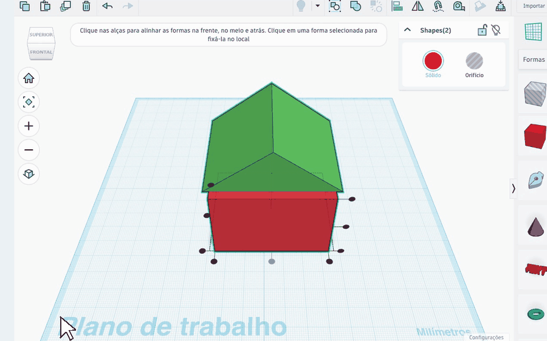
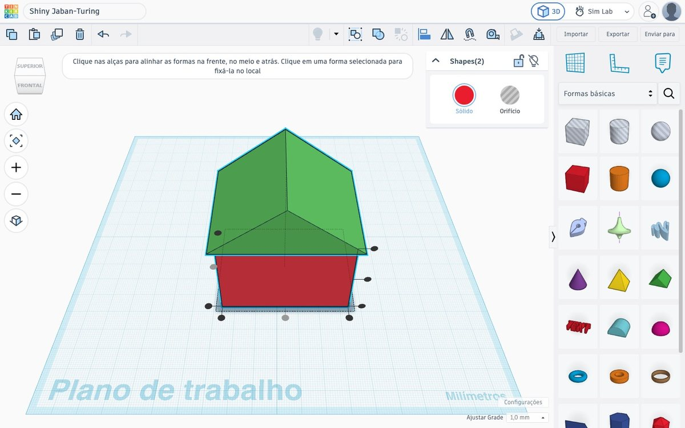
O clipe repete sozinho. Repare onde o cursor vai antes de clicar.
Foto da tela.
Clique na bolinha do meio da coluna da esquerda.
Agora o telhado também está centrado de frente para trás: o beiral é igual na frente e atrás. Aperte Esc para fechar o Alinhar.
- O telhado ainda está torto
- Faça os dois: o do meio embaixo (passo 9) e o do meio à esquerda (este).
- Sobrou o Alinhar na tela
- Aperte Esc.
Traga outra Caixa: a porta
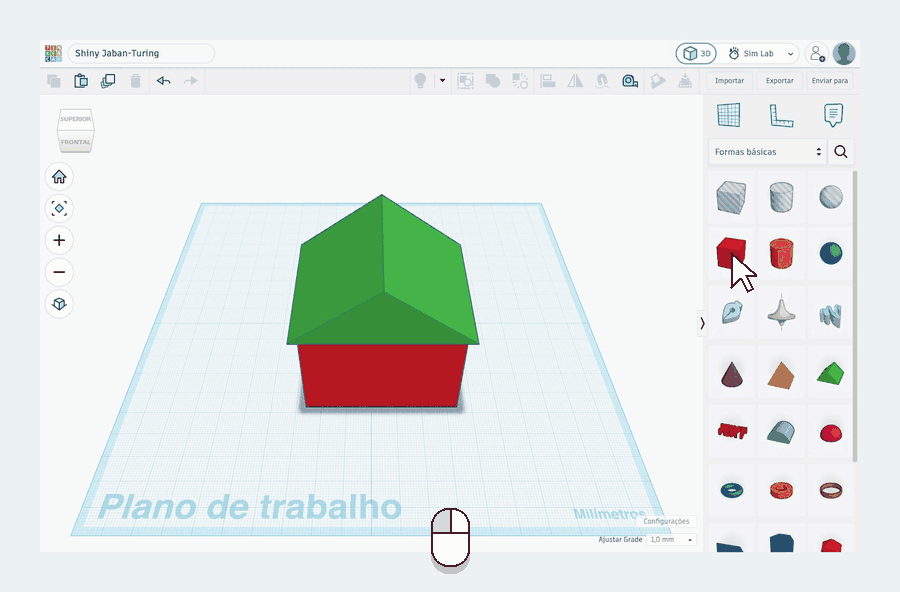
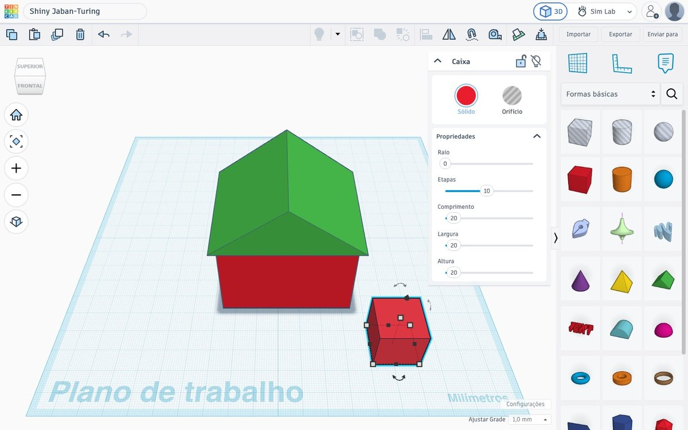
O clipe repete sozinho. Repare onde o cursor vai antes de clicar.
Foto da tela.
Clique num lugar vazio do plano, para soltar a seleção. Arraste outra Caixa vermelha da coluna da direita e solte no plano, à frente e ao lado da casa — não em cima dela.
Essa caixa vai virar o buraco da porta.
- A caixa nasceu em cima do telhado
- Arraste-a de novo para o plano, longe da casa. Ela precisa estar no chão.
- Peguei a caixa cinza listrada
- Essa já é o buraco: pule o próximo passo. Mas ela nasce no tamanho padrão.
Transforme a caixa em Orifício
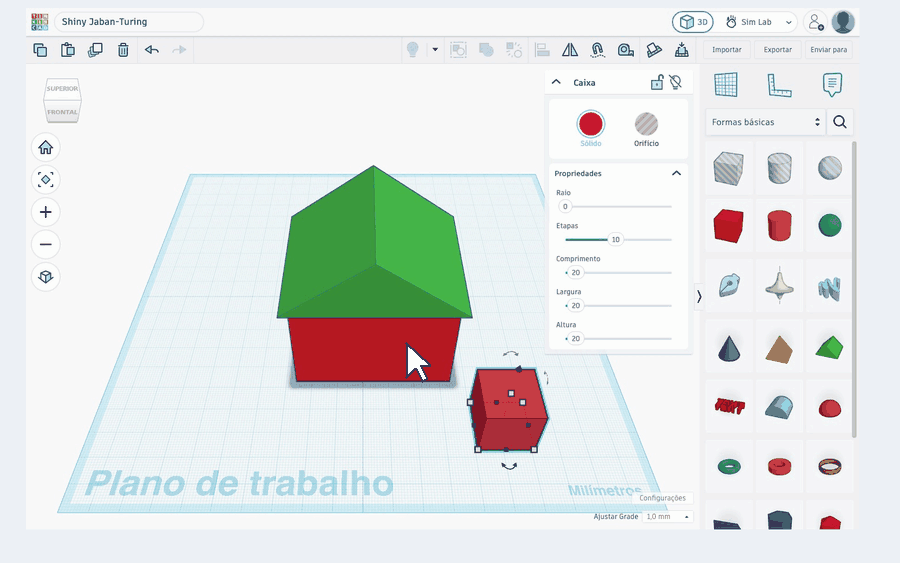
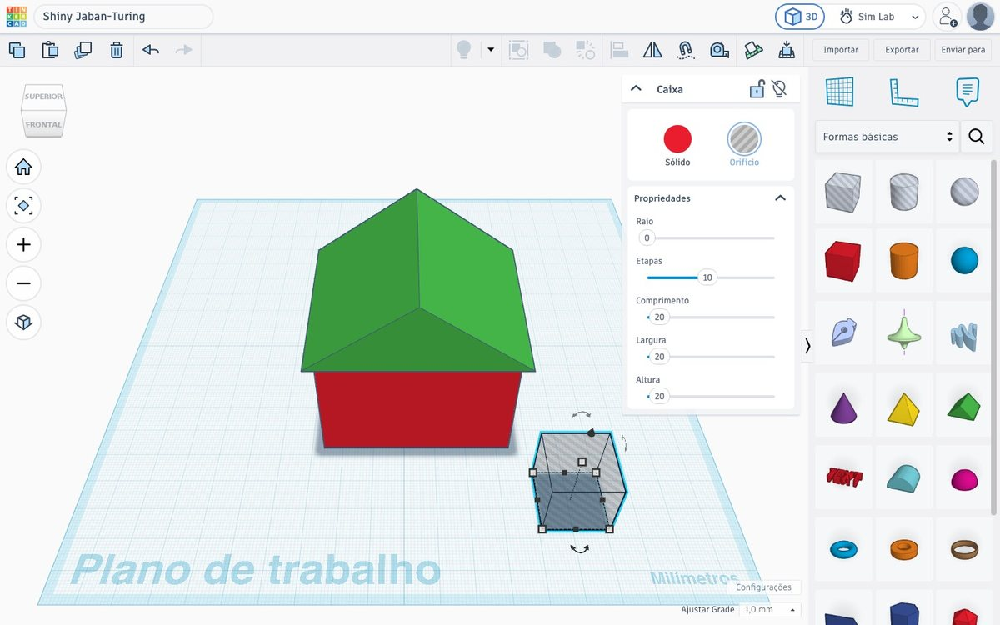
O clipe repete sozinho. Repare onde o cursor vai antes de clicar.
Foto da tela.
Com a caixinha selecionada, no painel clique em Orifício (a bolinha cinza listrada, ao lado de Sólido).
A caixa fica cinza e listrada: agora é um buraco.
- Nada mudou de cor
- Confira que a caixinha está selecionada (com as alças) e clique na bolinha do Orifício.
- A casa é que ficou listrada
- Você estava com a casa selecionada. Clique no Sólido para desfazer e selecione a caixinha.
Porta: Comprimento 12, Largura 16, Altura 28
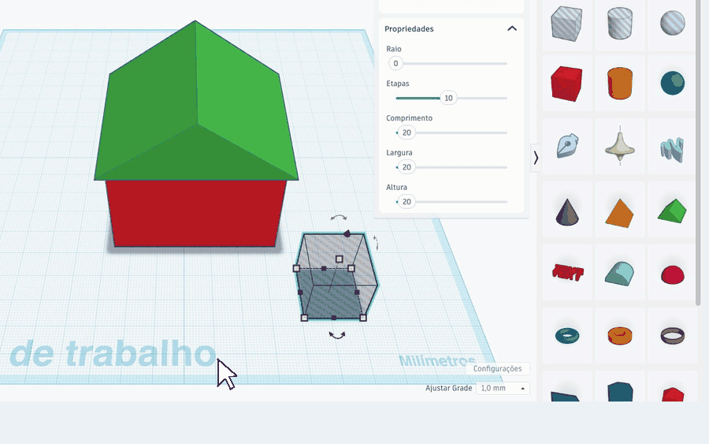
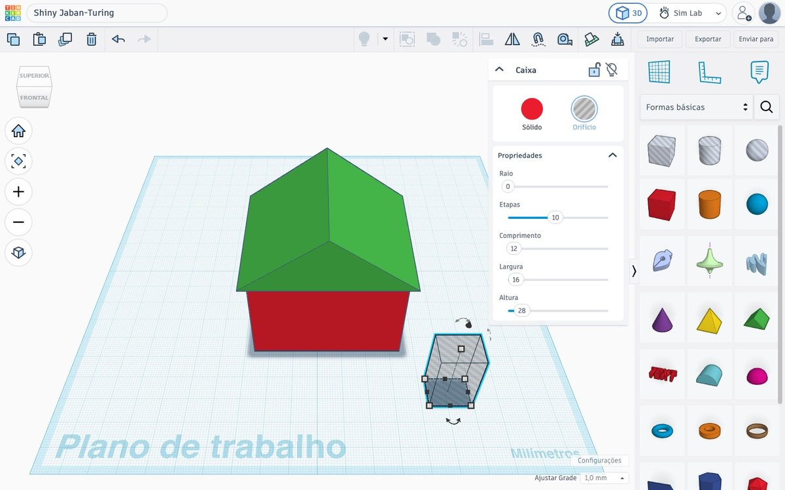
O clipe repete sozinho. Repare onde o cursor vai antes de clicar.
Foto da tela.
No painel, escreva 12 em Comprimento, 16 em Largura e 28 em Altura (Enter depois de cada).
A porta tem 16 mm de largura e 28 de altura, e o 12 é a profundidade: é o quanto o buraco vai entrar na parede.
- A porta ficou deitada
- Confira: a altura (28) é o maior número, e a largura (16) é maior que o comprimento (12).
- O número ficou estranho
- Clique no campo, aperte Ctrl + A (no Mac, Cmd + A) e escreva de novo.
Escolha só a casa e a porta: clique e Shift + clique
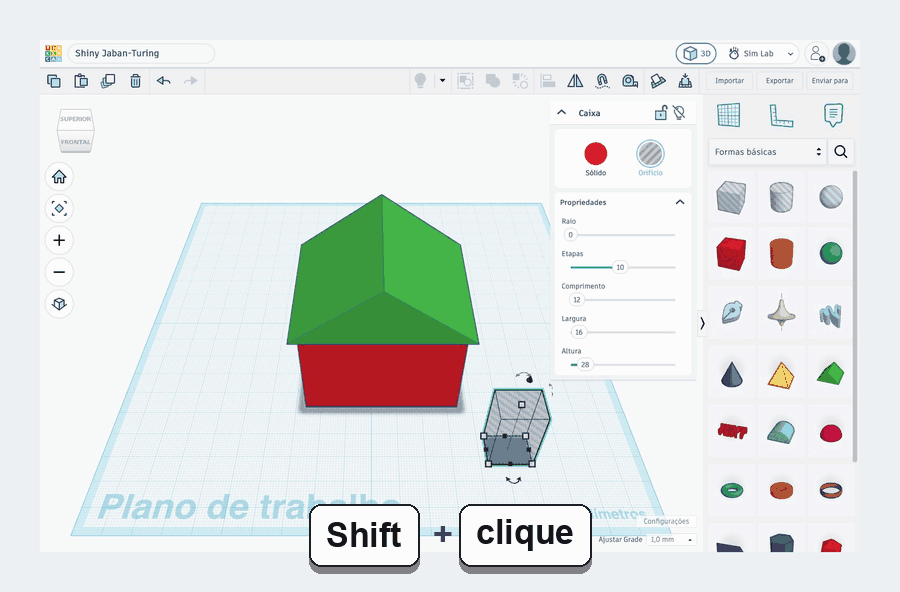
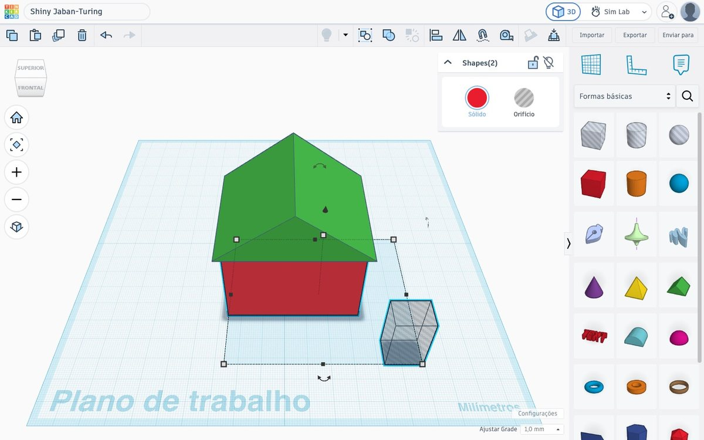
O clipe repete sozinho. Repare onde o cursor vai antes de clicar.
Foto da tela.
Clique num lugar vazio do plano. Clique na casa (no vermelho da parede). Agora segure Shift e clique na porta (a caixinha listrada): o Shift junta a segunda peça à seleção, sem soltar a primeira.
O telhado fica de fora: só a casa e a porta vão ser alinhadas.
- O painel diz Shapes(3)
- O telhado entrou na seleção. Clique num lugar vazio e refaça: primeiro a casa, depois Shift + clique na porta.
- Só a porta ficou selecionada
- Você soltou o Shift antes do clique, ou não clicou na casa primeiro. Refaça.
- Não consigo clicar na porta
- Ela é cinza listrada, na frente da casa. Clique bem no meio dela.
Abra o Alinhar de novo
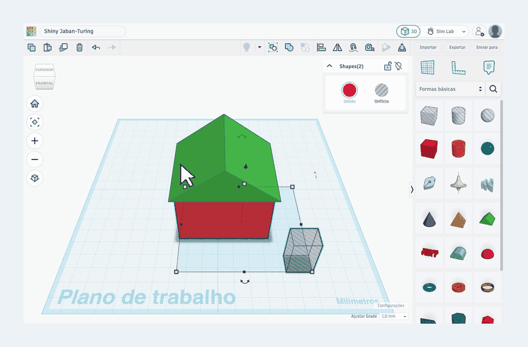
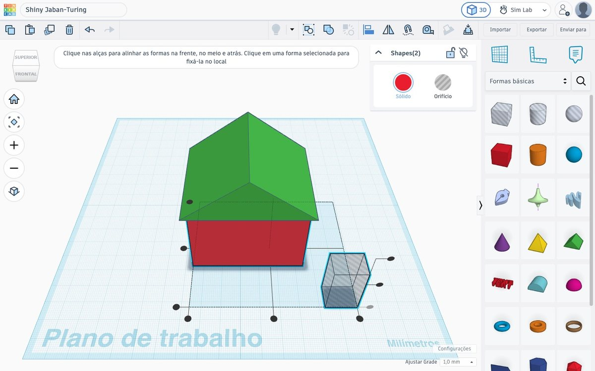
O clipe repete sozinho. Repare onde o cursor vai antes de clicar.
Foto da tela.
Na barra de cima, clique no botão Alinhar.
As bolinhas pretas aparecem em volta da casa e da porta — só das duas.
- As bolinhas não apareceram
- Você precisa de duas peças selecionadas. Volte ao passo 14.
FIXE a casa de novo
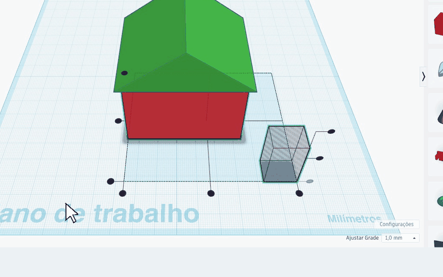
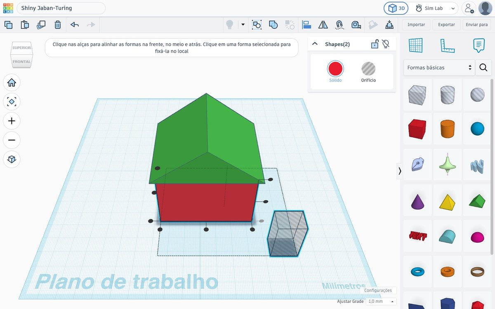
O clipe repete sozinho. Repare onde o cursor vai antes de clicar.
Foto da tela.
Clique em cima do corpo vermelho da casa: ela fica fixa e só a porta vai andar.
- A seleção sumiu
- Você clicou fora da casa. Aperte Ctrl + Z e refaça os passos 14 a 16.
Centro em X: a bolinha do meio, embaixo
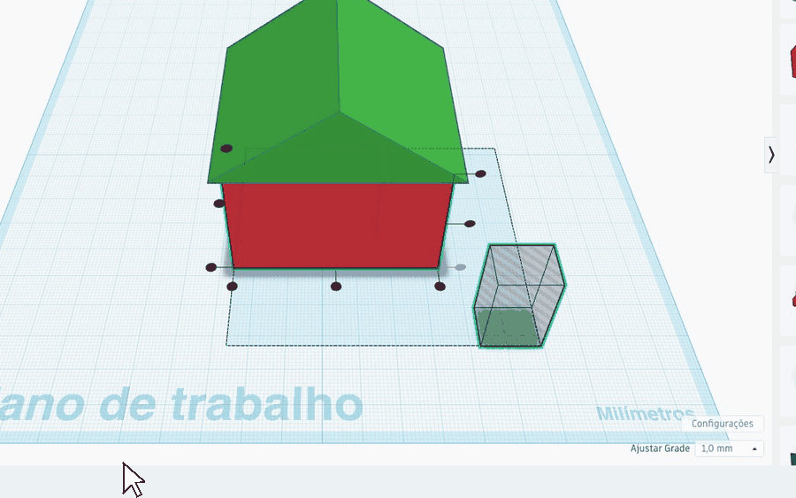
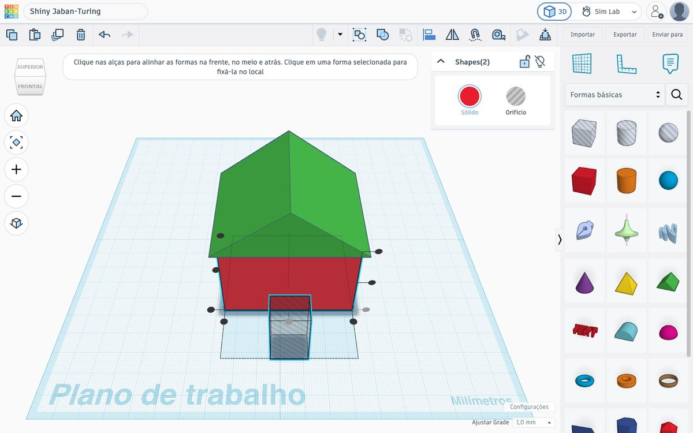
O clipe repete sozinho. Repare onde o cursor vai antes de clicar.
Foto da tela.
Clique na bolinha do meio da fileira de baixo.
A porta desliza para o meio da parede da frente, da esquerda para a direita.
- A casa é que andou
- Você não fixou a casa no passo 16. Aperte Ctrl + Z e refaça.
Rente à frente: a bolinha de baixo, à esquerda
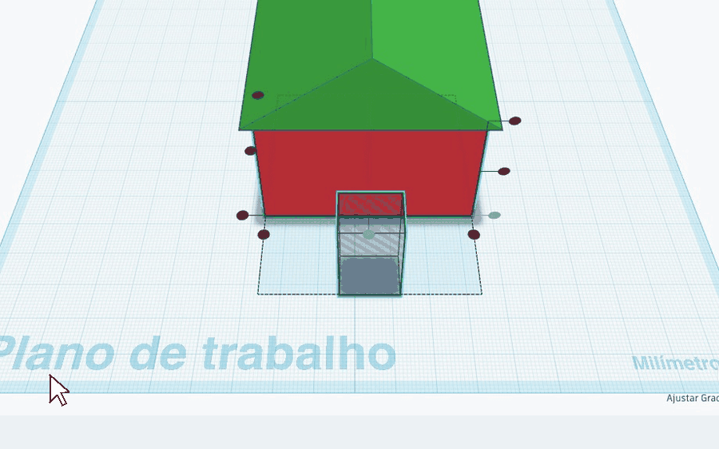
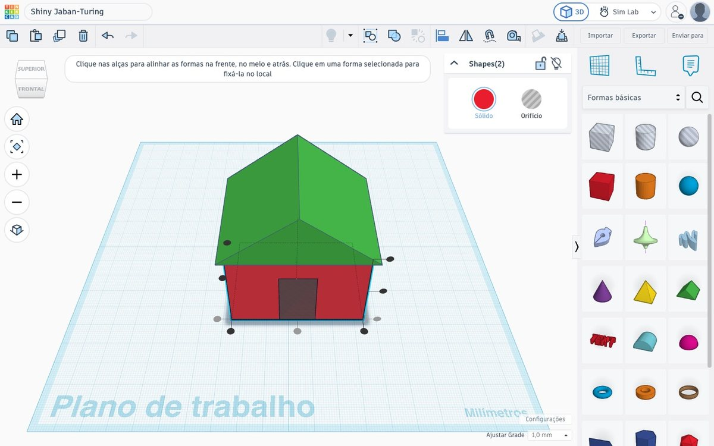
O clipe repete sozinho. Repare onde o cursor vai antes de clicar.
Foto da tela.
Clique na bolinha de baixo da coluna da esquerda (a mais perto de você, que alinha na frente).
A porta encosta na parede da frente: a frente dela fica rente à frente da casa, e os 12 mm de profundidade entram parede adentro. É assim que o buraco cava a parede.
- Alinhou no meio e a porta sumiu
- Você clicou na bolinha do meio da coluna. A que alinha na frente é a de baixo.
- A porta ficou toda dentro
- Pode acontecer se alinhar no meio: só a de baixo deixa a porta rente à frente.
Esc, Ctrl + A e Grupo de união
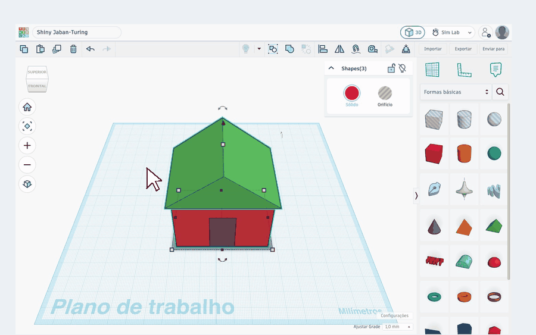
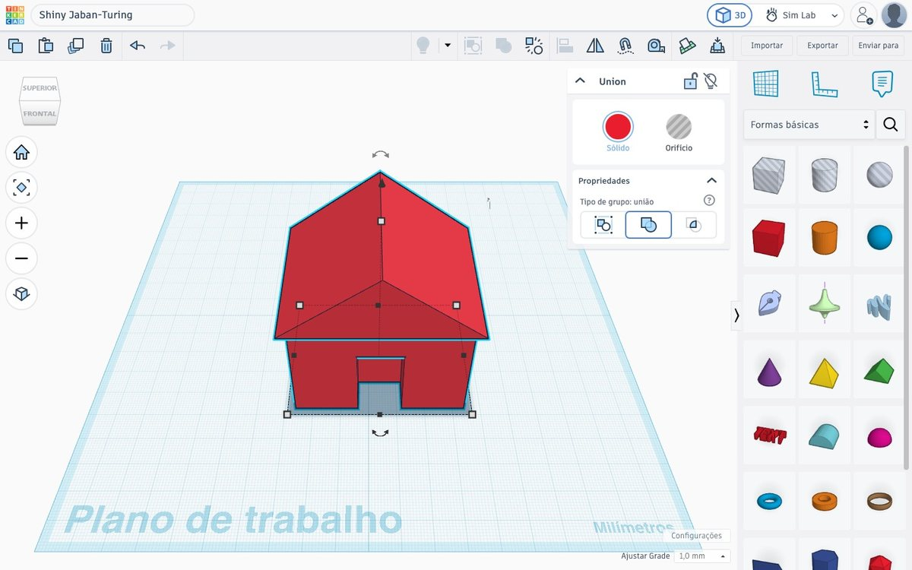
O clipe repete sozinho. Repare onde o cursor vai antes de clicar.
Foto da tela.
Aperte Esc. Clique num lugar vazio e aperte Ctrl + A (Mac: Cmd + A): agora são três peças selecionadas, Shapes(3).
Na barra de cima, clique no do meio dos três botõezinhos de juntar, o Grupo de união.
O buraco da porta cava a parede, e a casa, o telhado e a porta viram uma peça só, toda de uma cor.
- O painel diz Shapes(2)
- Faltou uma peça. Clique num lugar vazio do plano e aperte Ctrl + A de novo.
- A porta não cavou
- O buraco ficou longe da parede. Aperte Ctrl + Z, desagrupe, e refaça o Alinhar da porta (passos 14 a 18).
- Sumiu o telhado
- O buraco encostou nele. Desagrupe com Ctrl + Shift + G e confira que a porta só toca a parede, não o telhado.
Olhe de frente: a porta e o telhado
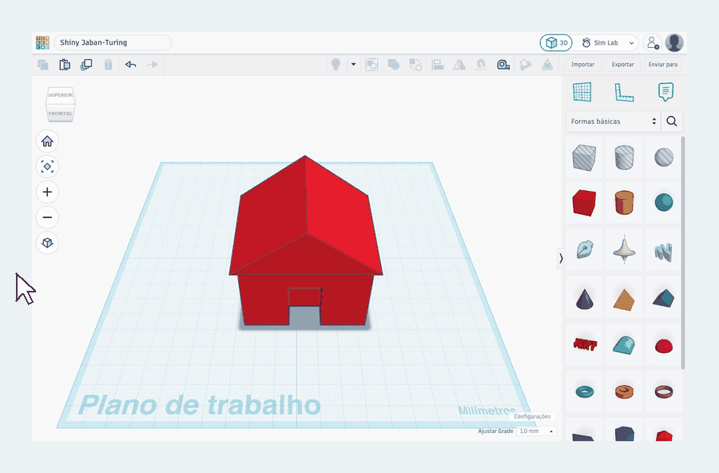
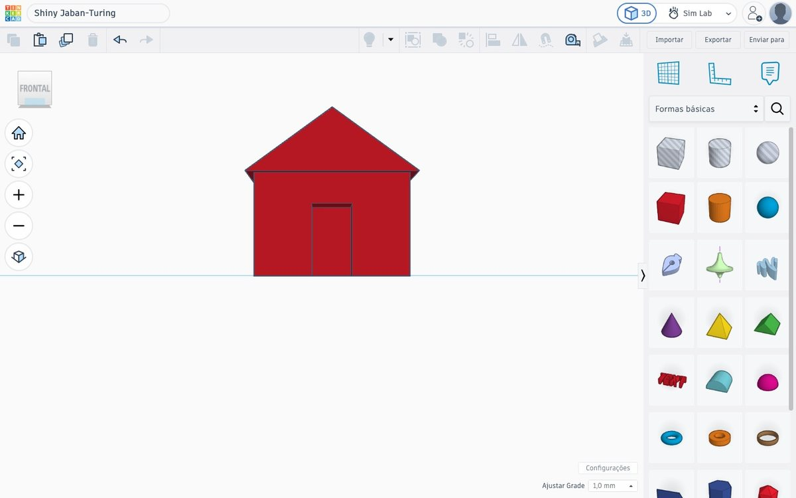
O clipe repete sozinho. Repare onde o cursor vai antes de clicar.
Foto da tela.
Clique num lugar vazio do plano. No canto de cima à esquerda, no cubo de vistas, clique na face escrita FRONTAL.
A câmera desce e você vê a casa de frente: o telhado de duas águas em cima, com o beiral dos dois lados, e a porta aberta no meio da parede, rente ao chão.
- Não vejo a porta
- Confira se não está olhando por trás. Para voltar à vista inicial, use a casinha da barra da esquerda.
- A câmera não mudou
- Clique na palavra FRONTAL do cubinho.
Dê um nome ao seu projeto
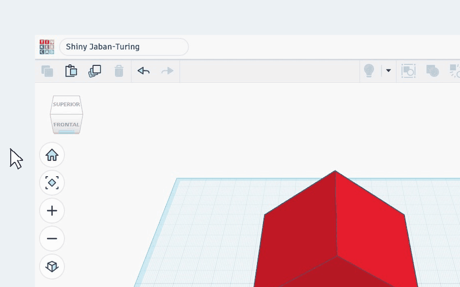
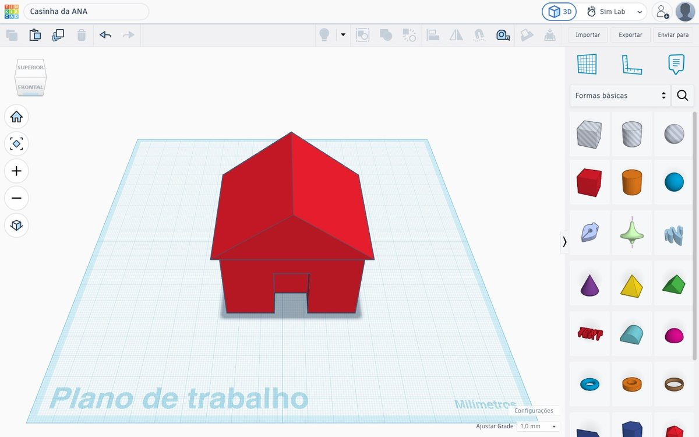
O clipe repete sozinho. Repare onde o cursor vai antes de clicar.
Foto da tela.
Clique na casinha da barra da esquerda para voltar à vista inicial. Depois clique no nome do projeto, no canto de cima à esquerda (o sorteado). Apague, escreva Casinha da ANA (ou o seu nome) e aperte Enter.
O Tinkercad salva sozinho. A casinha está guardada na sua conta.
- O nome não mudou
- Falta o Enter. Clique no nome de novo e faça de novo.
- Clicou e o campo não abriu
- Clique em cima das letras do nome, e não ao lado.